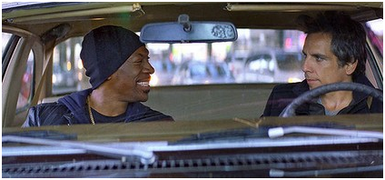

To get a handle on life, look to Hollywood
Date January 8, 2012
Patricia Edgar

Eddie Murphy and Ben Stiller in Tower Heist.
IT IS through storytelling that we come to understand the crises of our age. Time magazine may legitimise the protester as its person of the year, but for most of us, who do not read the financial pages and news magazines, it is the human dramas told through the visual media - television and movies - that have most impact and reach.
When Time asked the Islamist Jlassi why revolution has occurred now rather than earlier, the answer was, ''especially Al Jazeera - everyone watches TV''.
It's more than three years since the Lehman Brothers collapse brought the global financial system to the brink. People lost life savings, jobs and houses and ''the 99 per cent'' whose lives had been changed dramatically could make little sense of what happened.
As a crucial engine of the media in modern life, Hollywood, along with the independent film production industry, has done its bit to explain the crash. Up in the Air (2009) had George Clooney playing a corporate downsizing expert whose high-flying lifestyle is threatened by the crash. The Company Men in 2010 followed a year in the life of three professionals trying to survive redundancy. Wall Street: Money Never Sleeps, also in 2010, revived the greedy Gordon Gekko. The 2010 documentary Inside Job won the Academy Award in 2011, and last year's Too Big to Fail took a close look at CEO Richard Fuld's benighted attempts to save Lehman Brothers, while all the President's finance men worked to save the US economy.
Now showing, Tower Heist is an enjoyable romp. Ben Stiller and Eddie Murphy (pictured below) lead a gang against Alan Alda, an unscrupulous financier who has swindled the staff's pension funds in a Ponzi scheme. The opening shot sets the tone, with the eyes of Benjamin Franklin in close-up. We pull back to see a huge $100 bill on the bottom of Alda's swimming pool on top of the tower where the staff plan to get their revenge.
The best of these films is Margin Call, released soon. It is a more serious tale exposing the masters of the universe who packaged, repackaged and sold billions of dollars in bonds (backed by subprime mortgages) until the company's losses were greater than its total market capitalisation. Jeremy Irons is CEO Dick Tulds - a not-so-subtle take on Richard Fulds - who directs his analysts to dump worthless paper into the market at discount rates before word gets out.
These films reinforce the cynicism, anger and revulsion people feel about banks, corporate greed and ineffectual politicians, and our vulnerability against the big end of town. Through dramatic storytelling they translate catastrophe into compelling narrative. We depend on the arts to make sense of our world.
It's not just filmmakers drawing attention to the central ethical questions of our times. On Broadway, Terence Rattigan's play Man and Boy, first performed in 1963 but set in 1934 following the crash that led to the Great Depression, is enjoying a revival. Frank Langella (who portrayed Nixon in the Frost/Nixon drama) is riveting as Gregor Antonescu (think Bernard Madoff today), a Romanian-born radio and oil king. He is a man who would steal your socks without taking off your shoes and you would admire his deftness. In watching Langella's performance, I thought how brilliantly he could capture the failing Rupert Murdoch we saw face questioning by the British parliamentary committee. The arts could be more effective than the inquiry in conveying to the public the tale of corruption and the toxic workplace culture at the News of the World, where principles were set aside in the cause of publishing sensational fodder.
A film on the demise of the Murdoch empire will come in time. It is Shakespearean in scale: an ageing patriarch, rifts in his dynasty, three wives, six children, the heir no longer apparent, scheming editors and conniving reporters and the establishment waiting for the Dirty Digger to implode.
Nicole Kidman with her natural wild curly locks could play Rebekah Brooks and any number of strapping young women could play Wendi Deng defending Rupert from the pie thrower.
Drama in theatre and cinema provide vital commentary on the human condition. Shakespeare's plays are still relevant for their depiction of corruption and duplicitous politics. Kevin Spacey's recent portrayal of Richard III is a terrifying picture of the abuse of power.
These films, plays and Time magazine's celebration of the do-it-yourself protester all help us to re-imagine the values on which our global society could be based.
Patricia Edgar is a media sociologist.